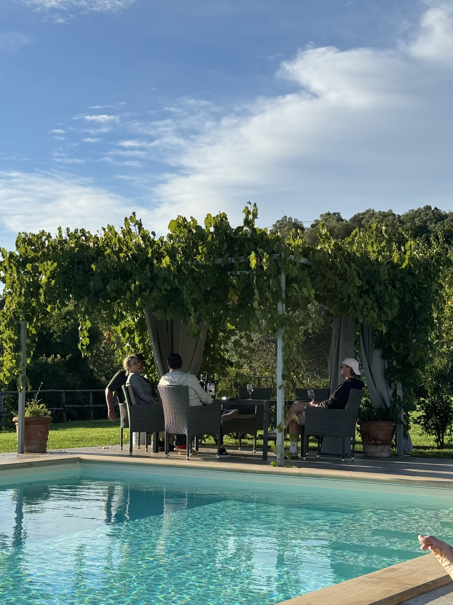
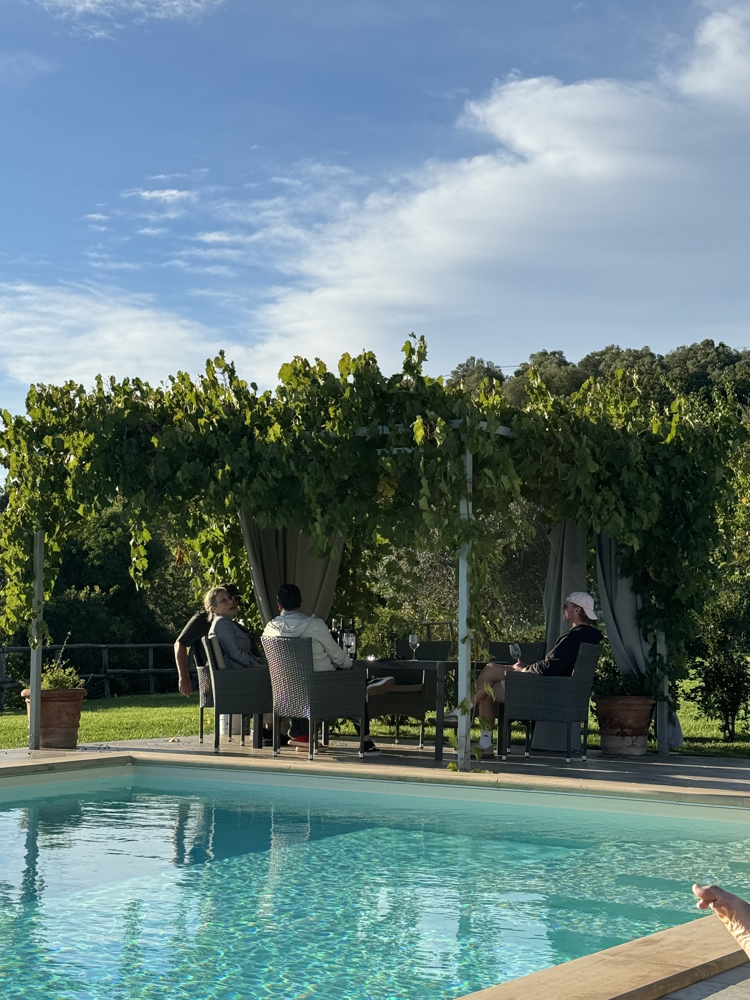

Todi Winery


The first thing I did with Sally after she picked me up from the train station was go to the local grocery store. I was impressed by the variety and freshness of deli meats. They had a pig leg ready to be cut right before you by the butcher and produce prosciutto. Almost all the meat in Italy was pig.


Sally and Rolly’s harvest was already complete so I picked grapes at a neighboring vineyard. It was very generous of Sally to give me a ride at 6:30 AM. I picked Sangiovese grapes all day with friends from England who volunteered at this neighboring vineyard all summer. They got accommodation, food, and wine in exchange for winemaking. A lot of young people begin volunteering on vineyards to gain experience in hopes of getting a paid job at a larger winery in a few years.
Just like many places I visited before, Sally and Rolly’s winery was on top of a hill with a distant view of rolling hills and the town of Todi. The view constantly changed due to the interacting sun, clouds, and rain.
 

This was the pool area. The water was freezing! It had a poolside terrace and table where we tasted Sally and Rolly’s wines with the English guys volunteering at the other winery.
The winery was organic, so many imperfect grapes and insects were on the bunches. The process went slowly because after picking a bunch off the vine, I had to remove the imperfect grapes, the bugs, and spiderwebs before placing them in the basket.
Grapes in the wine drum where the fermentation happened. Rolly gave me a full tour and demonstration of their wine production. I even got to taste the grape juice from their recent harvest - it was so sweet.
Overall
This was a luxury farm experience. I loved it. However, I still want to have another tougher farm experience. Maybe kill a pig and make sausage or something like that.